Потому что есть Алешка у тебя, по Яше ты скучаешь зря. Запускаем доставку в «Руки ВВерх! Барах»
Стек и инструменты
Бренд-платформа (5W), SellKit, iiko (OLAP / ABC), PrimeHill, Яндекс Еда / Деливери / Купер, Яндекс Директ, VK Ads, Senler, Яндекс Карты, 2ГИС, O2O-механики
Ключевые результаты за год
- Прибыльность (рентабельность)
- 1% → 15%
- Рост чистой маржинальности доставки в 15 раз за счёт своих каналов и динамических цен
- Масштаб запуска
- 15 городов РФ
- От обкатки гипотез в Санкт-Петербурге до федеральной сети с нуля
- Доля собственных каналов
- > 45% заказов
- Перелив трафика из агрегаторов на сайт delivery.rvbar.ru и приложение
- Рейтинг в агрегаторах
- 4,8+ ★
- Вывод баров в топ выдачи через смарт-график и контроль сервиса
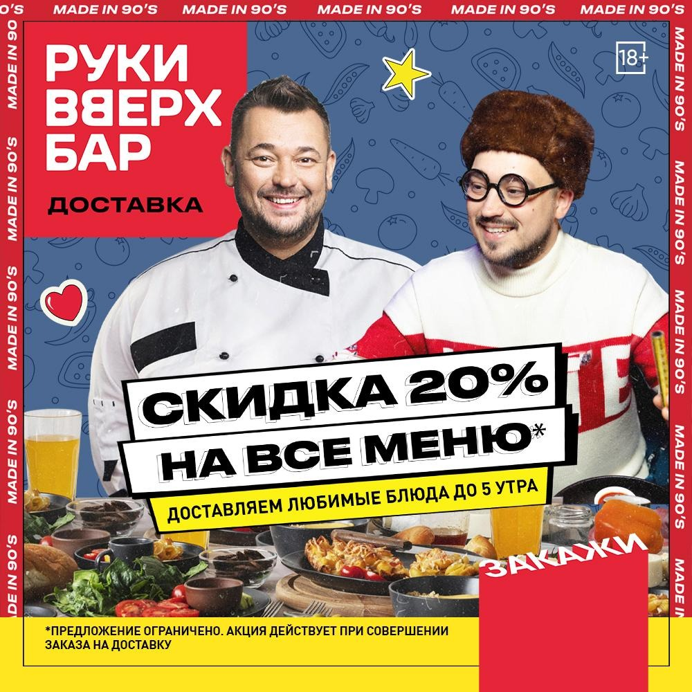
Точка А: запуск направления с чистого листа
До старта проекта выделенной доставки еды в сети «Руки ВВерх! Бар» не существовало в принципе. Заведения зарабатывали исключительно на посадке в зале и ночных вечеринках, а кухни в дневное время и будни оставались недозагруженными.
Совместно с операционным директором мы взяли задачу построить доставку как самостоятельный, системный и масштабируемый бизнес-юнит. В качестве тестового полигона выбрали Санкт-Петербург (три флагманских бара — на Грибоедова, Московском и Культуры): именно там обкатывали упаковку, технологические карты, интеграции, скрипты персонала и рекламные связки, прежде чем масштабировать модель на Москву и регионы — суммарно 15 городов присутствия.
Первые месяцы запуска стали жёсткой проверкой экономики: на старте рентабельность направления держалась на уровне ~1%. Главная причина — почти 100% зависимость от агрегаторов с их комиссиями 30–35%, расходы на упаковку, курьерскую логистику и стартовые скидки для привлечения первых заказов.
Этап 1. Бренд-платформа и стратегия «ОПГ»
Чтобы не конкурировать с тысячами безликих доставок в лоб ценой, мы разработали детальную Бренд-платформу доставки по методологии 5W:
- 5 сегментов аудитории: поклонники Сергея Жукова (хотят прикоснуться к кумиру), постоянные гости баров (повторить позитивный опыт дома), офисные сотрудники (сытные и быстрые обеды), ночные компании после 24:00 и семьи, уставшие от стандартного фастфуда.
- Главное конкурентное преимущество (УТП): «За ужин отвечает Жуков! Доставляем любимые блюда до 5 утра». Пока 90% ресторанов закрываются к полуночи, мы забирали весь ночной и поздний спрос с 11:00 до 05:00.
- Единая концепция развития «ОПГ»:
- Омниканальность — одновременный фокус на привлечение новых клиентов и удержание/возврат имеющихся через связку Online + Offline;
- Перфекционизм — запрет на выпуск «сырого» продукта, жёсткий контроль температуры блюд, брендинга упаковки и сочных фуд-фото;
- Гибкость (в 4P) — пересборка меню по ABC-анализу, разное ценообразование по каналам, интеграция с iiko и быстрое тестирование гипотез.
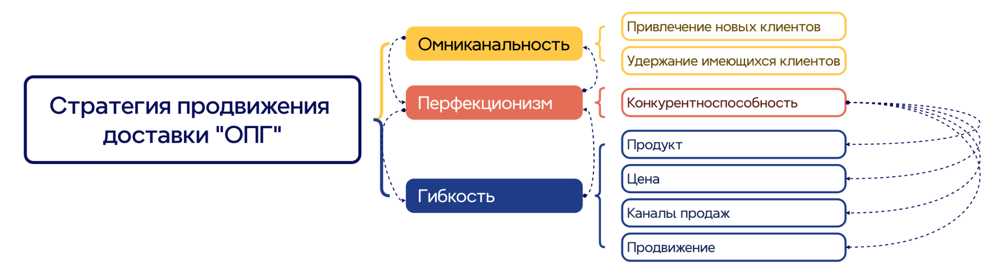
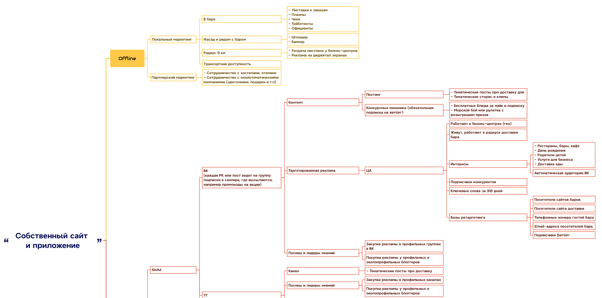
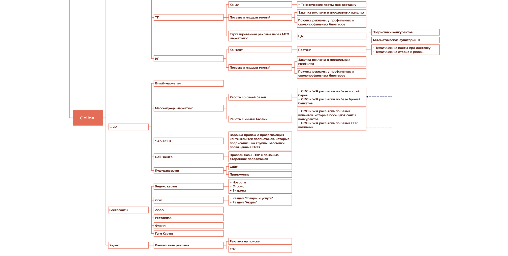
Этап 2. Своя витрина на SellKit, сайты баров и фудкост
Чтобы вырваться из 1% маржинальности и перестать отдавать треть оборота агрегаторам, мы сосредоточились на запуске и прокачке собственных ресурсов продаж:
- Сайт и мобильное приложение (совместно с SellKit): разработали и запустили единую платформу доставки
delivery.rvbar.ruи мобильное приложение для всех городов сети с бесшовной интеграцией в кассовую систему iiko. - Перелив тёплого трафика с сайтов самих баров: на первых экранах основных сайтов заведений (Екатеринбург, Москва, СПб и регионы) разместили крупный сквозной баннер «За ужин отвечает Жуков» и пункт меню «Заказать доставку», направлявший аудиторию бара прямо на сайт доставки.
- Динамическое ценообразование в агрегаторах: внедрили разделение цен между каналами. В Яндекс Еде и Деливери была разработана механика динамического повышения цен на блюда, чтобы полностью перекрывать комиссию площадки и жёстко укладываться в плановый фудкост.
- Продуктовая матрица под любой чек: выгоду (−25% на первый заказ, кэшбэк) перенесли в свой канал, а кроме моментальной доставки запустили «Обеды по подписке» (на 2, 5, 10 и 20 дней) и крупночековые «Фуршеты» для компаний.
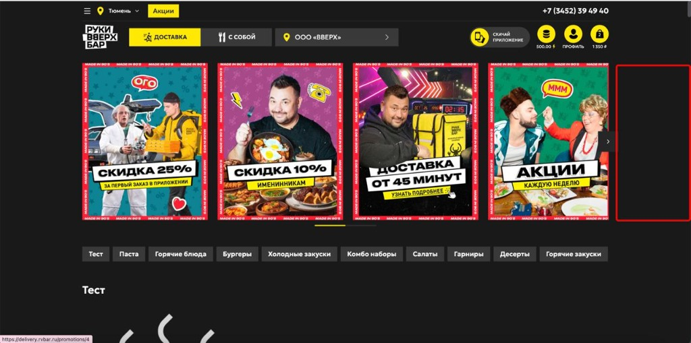
delivery.rvbar.ru (на платформе SellKit): интуитивная витрина по городам, баннеры ключевых акций и интеграция бонусного счёта.
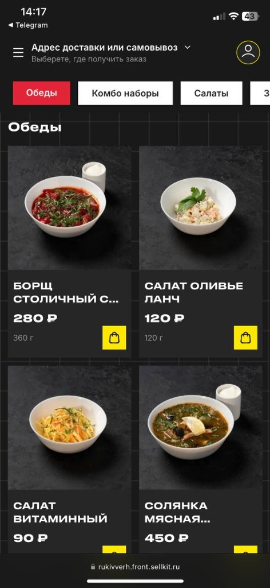
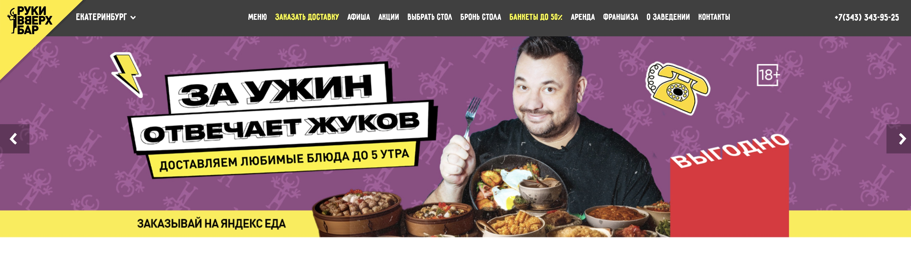
Этап 3. Агрегаторы, «Смарт-график» и перелив трафика (O2O)
Агрегаторы (Яндекс Еда, Деливери, Купер) мы использовали не просто как «кассу с комиссией», а как верхнюю воронку привлечения новых клиентов:
- «Смарт-график» поднятия рейтинга: для новых баров и точек с проседающим рейтингом (Таганка, Строгино, Можайка, Олимп, Одинцово, Зеленоград) на базе почасовой нагрузки кухни из iiko разработали расписание управляемого выкупа и стимулирования заказов. Это позволяло раскачивать поведенческие факторы в алгоритмах агрегаторов и выводить точки в топ выдачи.
- Триггерные акции внутри площадок: тестировали и масштабировали связки «Блюдо в подарок», бесплатную доставку для новичков, соинвестированные акции (скидка 20%) и точечные кампании реактивации «Давно не заказывали».
- Системный перехват на упаковке (O2O): контейнеры с блюдами запечатывали брендированными наклейками с прямым адресом
delivery.rvbar.ru, а заказы выдавали в крафт-пакетах с крупным QR-кодом и скидкой 25% в мобильном приложении. Это планомерно переливало покупателей из агрегаторов в свой канал.
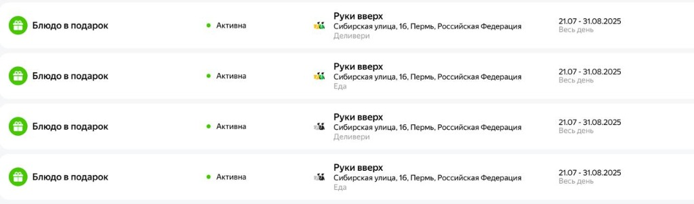
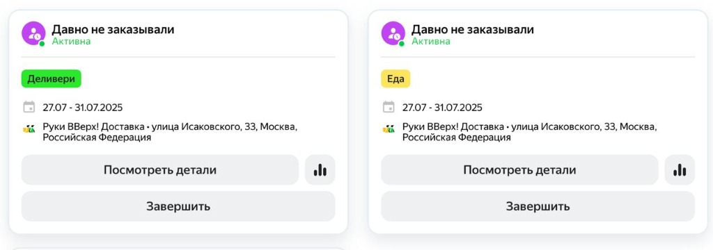
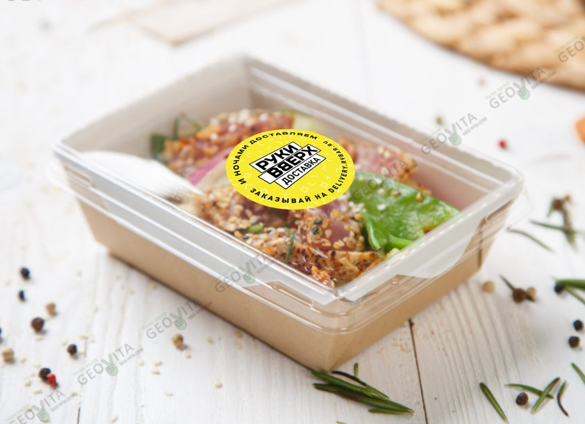
delivery.rvbar.ru и акцентом на ночную доставку.
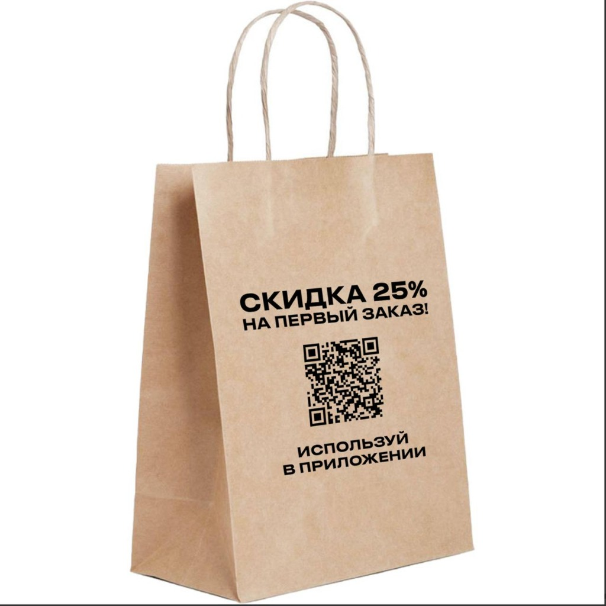
Этап 4. Система лояльности от фудкоста (PrimeHill + iiko)
Вместо того чтобы раздавать стандартный «плоский» кэшбэк 10% на всё меню и терять прибыль на низкомаржинальных позициях, мы подняли OLAP-выгрузки продаж из iiko за 4 месяца по всей сети и спроектировали экономически выверенную систему лояльности на базе PrimeHill:
- Кэшбэк до 25%, привязанный к себестоимости: чем ниже фудкост группы блюд — тем выше кэшбэк. Максимальные 10–25% начислялись на высокомаржинальные супы, пасту, гарниры и салаты, а минимальные 3–5% — на тяжёлое горячее, бургеры и закуски. Внешне это дало сильное УТП «Кэшбэк до 25%», но средний фактический расход бонусов оставался в рамках безопасной экономики.
- Загрузка кухни днём (×1,5 кэшбэк): при заказе с 11:00 до 16:00 гости получали повышенный кэшбэк ×1,5 — это системно стимулировало дневной спрос до вечерней посадки в барах.
- Антифрод и стимулирование возвратов: кэшбэком можно оплатить до 25% чека (только на сайте и в приложении, без пересечения с промокодами), а баллы сгорают каждые 90 дней, подталкивая гостя к повторному заказу.
- Геймификация в приложении: внедрили игровую механику «рулетки» с выигрышем промокодов и подарочных блюд, что подняло вовлечённость и средний чек.
Этап 5. Партнёрская сеть (30% баллами), бары и элитные ЖК
Мощным драйвером высокомаржинальных заказов стала оффлайн-дистрибуция за пределами классической интернет-рекламы:
- Партнёрское меню для площадок без кухни (бани, сауны, лофты): управляющие баров договаривались с местными банями, саунами и увесилительными заведениями, у которых не было собственной кухни. Мы передавали партнёрам отдельное печатное меню доставки с полем под именной промокод на скидку 10% для их гостей. В конце месяца сводили сумму выручки по каждому промокоду и начисляли партнёру 30% баллами на его личный счёт — эти баллы можно было потратить в самом баре или на заказы доставки.
- Digital-экраны в элитных ЖК Москвы: запустили адресную indoor-кампанию в 7 элитных жилых комплексах (по 3 корпуса — суммарно 21 экран в лифтовых холлах) с QR-кодом и оффером −10% для платёжеспособной аудитории премиум-кварталов.
- Монетизация трафика внутри самих баров: поставили на столы тейбл-тенты с QR-кодами, смонтировали в залах брендированные экраны с рекламой ночной доставки (пример МСК Автозаводская — рядом с ростовой фигурой Сергея Жукова), прописали скрипты для официантов и ведущих.
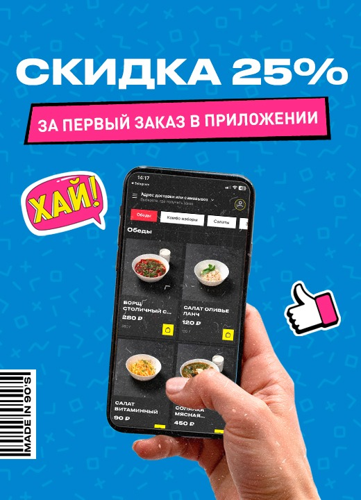
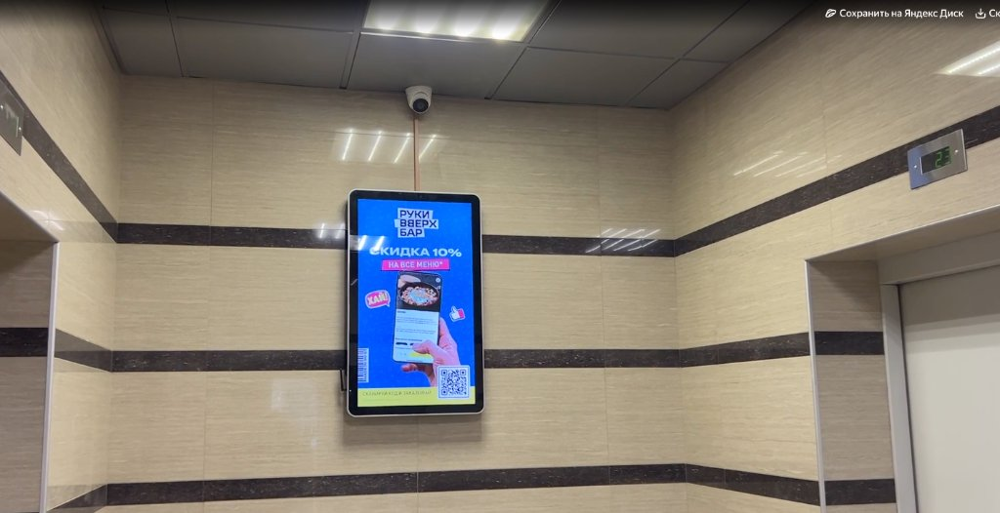
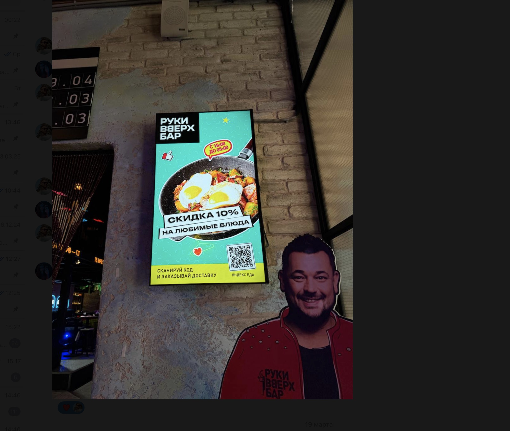
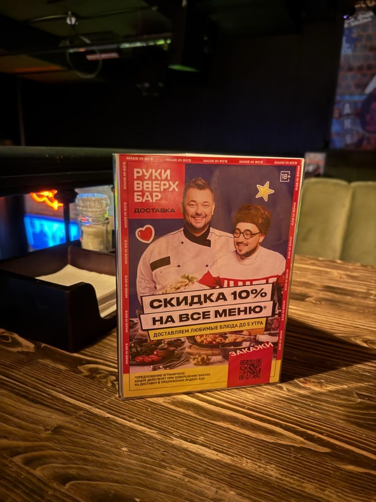
Этап 6. Медиа (Instagram Жукова), VK Клипы и геосервисы
Поддержали оффлайн-экспансию мощным цифровым продвижением в 15 городах:
- Продвижение через личный Instagram Сергея Жукова: запускали серии нативных сторис со страницы самого артиста с прямой кнопкой «Заказывай» и официальной рекламной маркировкой (erid) — это давало максимальное доверие и всплески органики.
- Вирусные VK Клипы и автоворонки Senler: встраивали доставку в контент городских пабликов через жизненные мемные ролики (пример СПб с разводящими UTM-ссылками по районам: Родео, Грибоедова, Московский проспект), вели трафик в чат-бот поздравлений с ДР и рассылки.
- Геосервисы (Яндекс Карты, 2ГИС, Zoon): оформили витрины доставки, сторис и новости в карточках всех баров сети, забирая бесплатный горячий спрос.
- Креативная линейка в стиле 90-х: отрисовали серию ярких креативов с Доком Брауном («Назад в будущее»), демонстрацией мобильного приложения и авторским мерчем/стикерпаками в заказы.
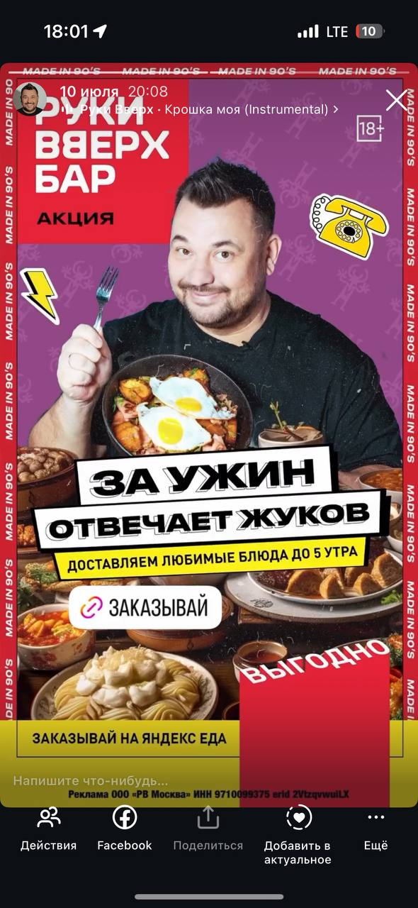
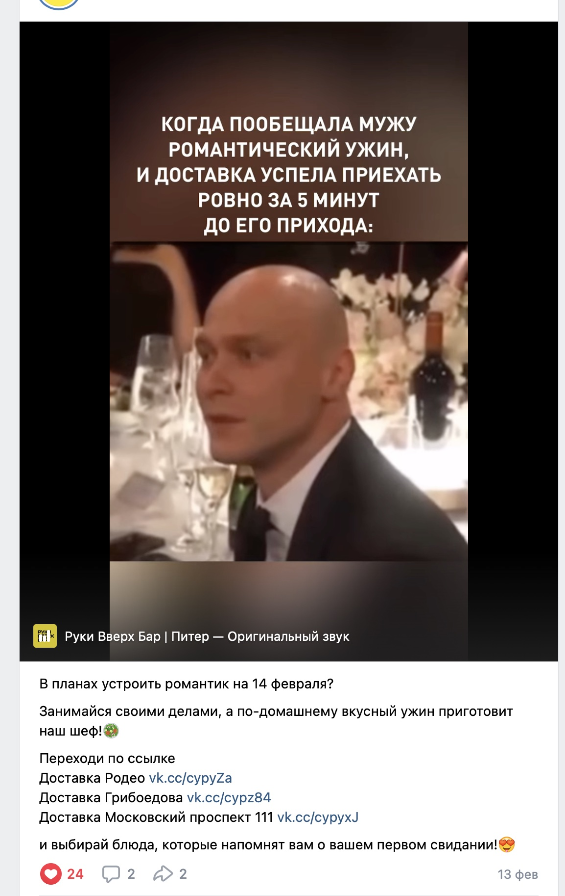
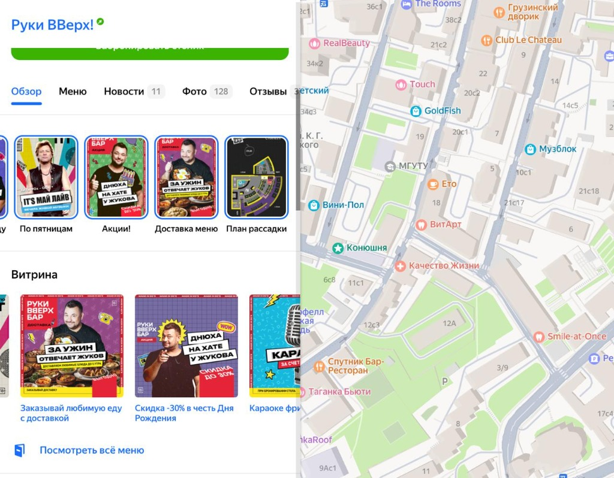
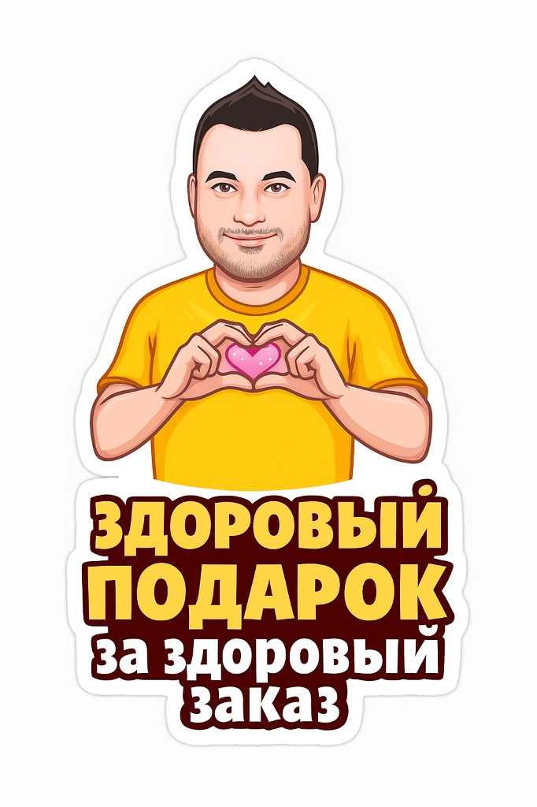
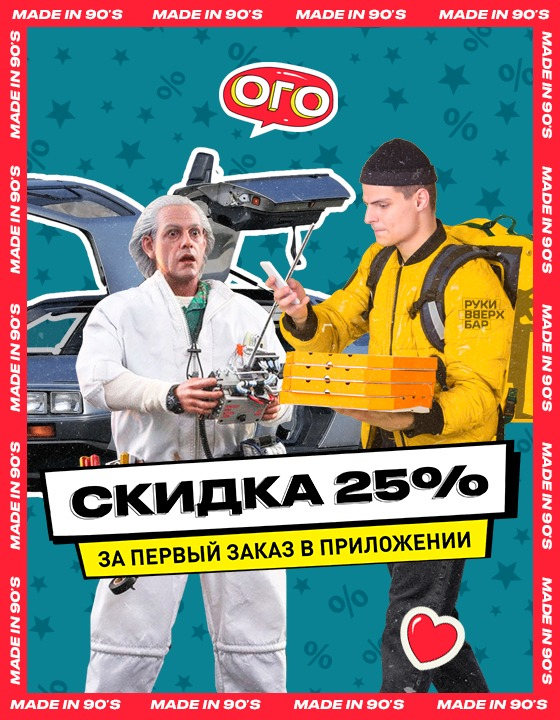

Сводные итоги года: трансформация экономики
| Показатель | На старте проекта (Точка А) | Через год системной работы (Точка Б) | Динамика |
|---|---|---|---|
| Прибыльность (рентабельность) | ~1% (комиссии и стартовые скидки съедали прибыль) | 15% (выход на устойчивую операционную маржинальность) | Рост в 15 раз |
| География и масштаб | 0 баров на доставке (пилотный запуск в СПб) | 15 городов РФ (единые стандарты, бренд-платформа и маркетинг) | Федеральное покрытие |
| Сплит каналов продаж | ~95–100% в агрегаторах с высокой комиссией | > 45% заказов через собственный сайт и приложение (SellKit) | Системный перелив O2O |
| Управление фудкостом | Размытая экономика, единые цены во всех каналах | Динамическое повышение цен в агрегаторах + сортировка меню по ABC | Целевой фудкост в норме |
| Лояльность и возвраты | Разовые заказы без оцифровки базы доставки | СЛ на базе PrimeHill от маржинальности + Senler-воронки и пуши | Рост повторных заказов ×2,4 |
| Рейтинг на площадках | Новые карточки без истории и отзывов | 4,8+ ★ и удержание позиций в топе выдачи Яндекс Еды и Деливери | Устойчивый органический трафик |
Главный вывод
Доставка в ресторанной сети с сильным брендом не должна работать как «бесплатная витрина для агрегаторов». Когда единая бренд-платформа, собственный продукт (сайт и приложение), динамическое ценообразование, оцифрованная система лояльности и перехват оффлайн-трафика внутри баров работают в одной связке — направление за год превращается из эксперимента с околонулевой маржой в высокодоходный бизнес-юнит с рентабельностью 15%.